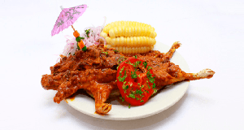

Picante de Cuy
Contexto Histórico
Essa receita vem da época pré-Inca e já sofreu inúmeras variações ao longo do tempo. O cuy é uma espécie de porquinho-da-índia e sua carne tem um sabor similar ao coelho, sendo bastante utilizada na culinária local

Ingredientes:
2kg de carne de porquinho da india
6 batatas fervidas
150 g de alho moído
200 g de pimenta-ají panca moída
Sal a gosto
Azeite
MODO DE PREPARO:
Cortar as batatas fervidas em metades ou rodelas e as reserve. Corte a carne em 2 á 4 pedaços (dependendo do tamanho) e condimente com sal e alho.
Fritar os pedaços de carne pelos dois lados em azeite quente. Uma vez fritos os pedaços de carne, na mesma frigideira adicione as batatas fervidas, a pimenta-ají panca com o alho moído, afogando a carne no condimento.
Cozinhar esta preparação por 5 ou 6 minutos (virando a carne dos dois lados). Servir acompanhado de molho crioulo e arroz branco como guarnição.